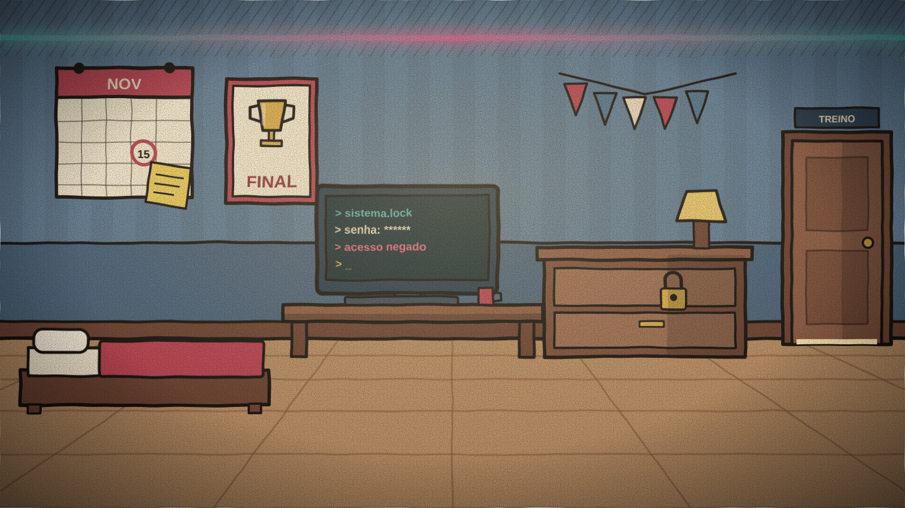
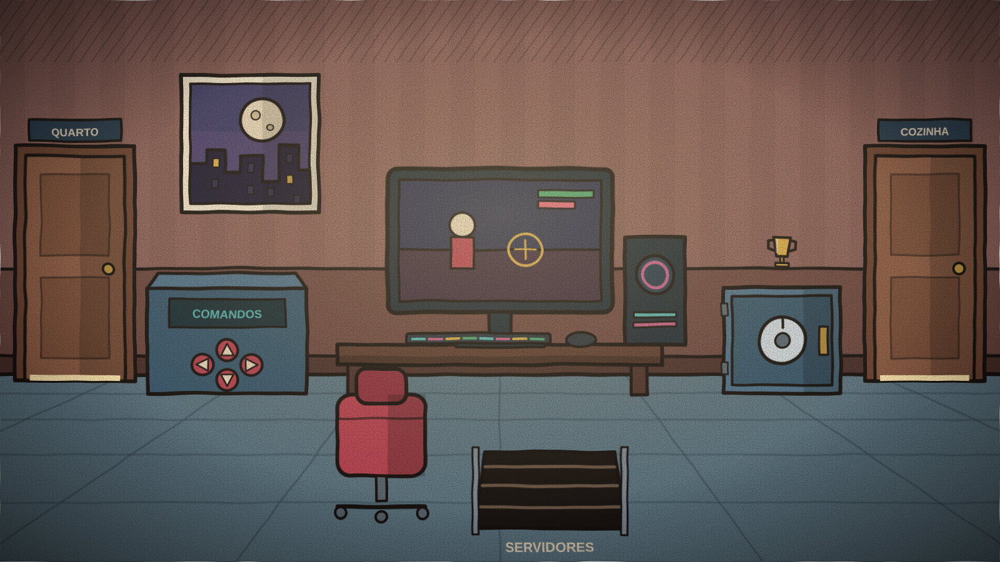
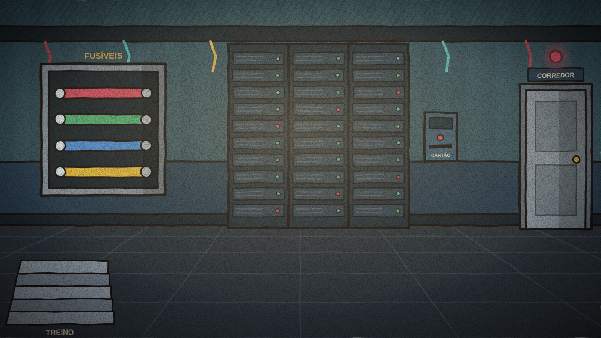
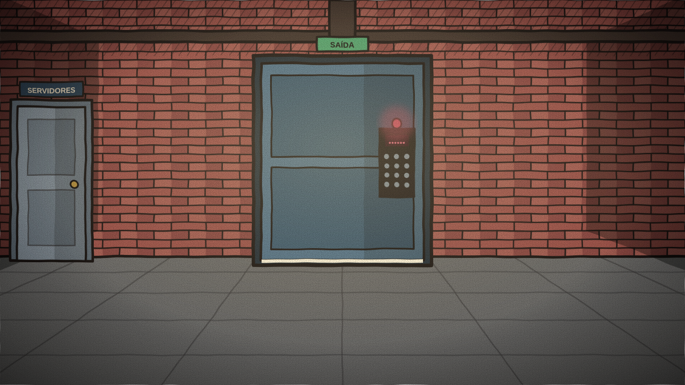

Cenários
A gaming house tem 5 ambientes navegáveis, todos na ala privativa do Kairo. Eles se conectam por portas e por um alçapão, e algumas pistas e mecanismos se complementam entre salas.
Mapa da casa
Resumo
| Cenário | Objetos | Passagens |
|---|---|---|
| Quarto do Kairo | 3 | Sala de Treino |
| Sala de Treino | 3 | Quarto, Cozinha, Servidores |
| Cozinha | 2 | Sala de Treino |
| Sala de Servidores | 2 | Treino, Corredor |
| Corredor de Saída | 1 | Servidores |
Quarto do Kairo

Ponto de entrada na ala privativa pela porta principal ilustrada em A História. A saída de serviço fica em outro ambiente, acessível pela sala de servidores. O calendário situa a final em 15 de novembro e ajuda a interpretar as primeiras pistas. A gaveta e o terminal revelam informações necessárias em outros ambientes.
- Calendário da final
- Gaveta com cadeado
- Terminal do quarto
Sala de Treino

O painel de comandos libera a leitura de mídia no PC. O arquivo encontrado ali exige interpretar números binários; uma calculadora opcional explica a conta e pausa a contagem enquanto estiver aberta. A sala também dá acesso à cozinha e ao alçapão dos servidores.
- Painel de comandos
- PC do setup
- Cofre do troféu
Cozinha

Ambiente de apoio à rotina de treino. A geladeira guarda um item útil para os servidores. Outros objetos comuns também podem ser examinados; vale observar além dos equipamentos eletrônicos.
- Geladeira com cadeado
- Lixeira
Sala de Servidores

Racks, infraestrutura de cabos e um painel elétrico principal. Como centro técnico da estrutura, o setor alimenta todos os sistemas e se conecta à sala de treino por um alçapão e ao corredor de saída por uma porta.
- Quadro de fusíveis
- Rack de servidores
Corredor de Saída

O corredor leva à saída de serviço, uma porta diferente da entrada principal pelo quarto. Sua fechadura programável exige um PIN de seis dígitos. O resultado é determinado pelo tempo restante, pelas falhas e pelos elementos coletados ao longo do percurso.
- Fechadura programável